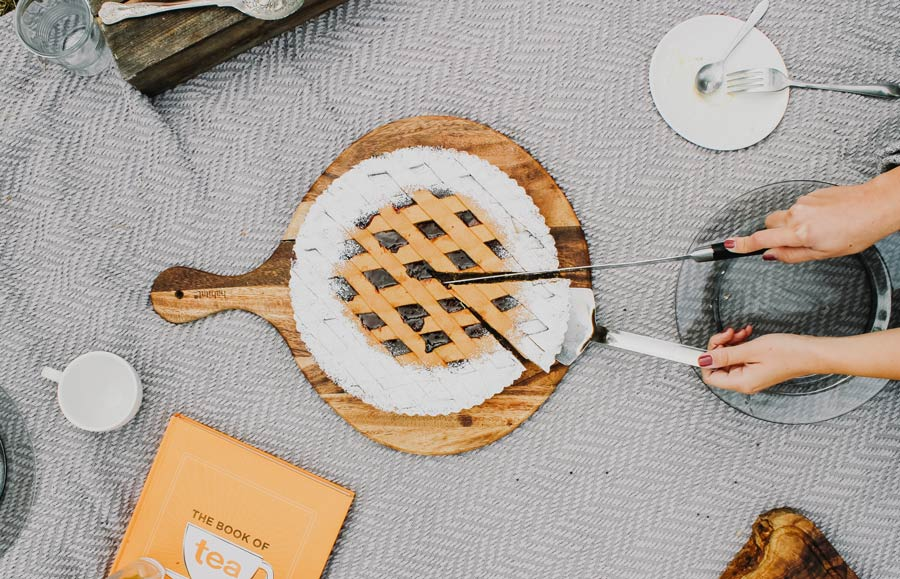
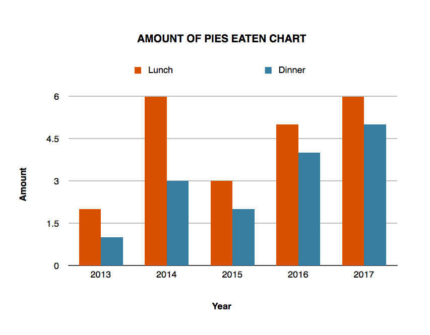
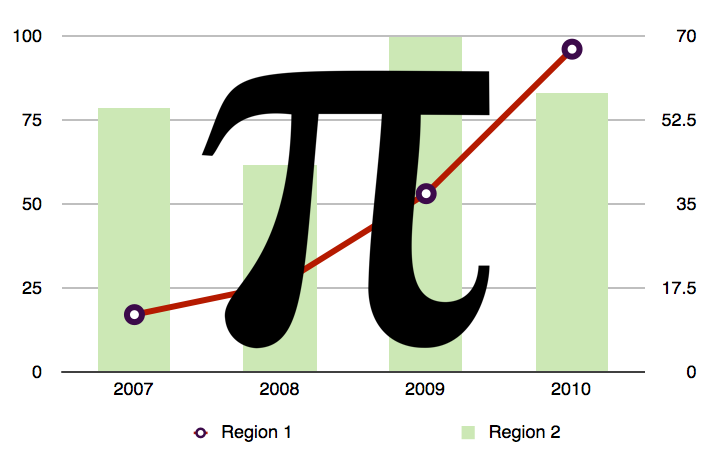

Step 1
- — Go to a store that sells pies
- — Buy a pie
- — Go to next step!

Pie image by Toa Heftiba | Unsplash

Image by Ivan Limongan
Step 2
- — Go to your computer
- — Open your browser
- — Google the word "chart"
- — Find an image of a chart
- — Combine your chart with your pie
- — Boom, you have a pie chart!
Step 3: Bonus
- — If you don't like pies. You can use PI instead.
- — Combine your PI with your chart
- — PI Chart achieved, you're done!

Image by Ivan Limongan
Congrats, you have a pie/pi chart!